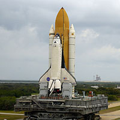
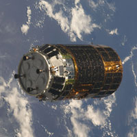

SpaceX, é uma empresa de transporte espacial dos Estados Unidos, sediada em Hawthorne, na Califórnia.
Dragon é a designação de uma espaçonave capaz de levar carga e/ou uma tripulação de até sete pessoas à uma órbita terrestre baixa.
O ônibus espacial foi um sofisticado veículo parcialmente reutilizável usado pela NASA como veículo lançador de satélites, nave para suas missões tripuladas de reparos e aparelhos em órbita no espaço e reabastecimento da Estação Espacial Internacional.
O ônibus espacial tornou-se o sucessor da nave Apollo usada durante o Projeto Apollo. O ônibus espacial foi lançado pela primeira vez em 1981 e realizou sua última missão em 2011.
NASA / AEB
Alcançamos novas alturas e revelamos o desconhecido em benefício da humanidade
STS-9
Randy Bresnik
Steve Bown
Space Shuttle
O que fazemos?
Com base neste crescente conhecimento científico do nosso sistema solar, a NASA está desenvolvendo o foguete e a nave espacial mais avançados para estender a presença humana mais ao espaço do que já fizemos antes. Lançando de um Centro Espacial Kennedy revitalizado na Flórida, o poderoso foguete do Space Launch System da agência irá transportar astronautas a bordo da nave Orion da NASA, passando pela Lua e eventualmente para Marte.
proximo lançamento
00
dias
00
horas
00
minutos
00
segundos
A nave espacial de carga não-tripulada SpaceX Dragon entrará em órbita, a partir do foguete Falcon 9 do Launch Complex 40 na Estação da Força Aérea de Cabo Canaveral (CCAFS) na Flórida, fornecendo suprimentos e equipamentos para a Estação Espacial Internacional.
Nossos Recursos
A NASA já operou e opera inúmeros programas, desde missões interplanetárias a satélites terrestres.
Programa Mercury
Realizado sob a pressão da concorrência entre os EUA e a União Soviética que existiu durante a Guerra Fria, o Programa Mercury foi iniciado em 1958 e lançou a NASA no caminho da exploração humana do espaço com as missões destinadas a descobrir se o homem poderia sobreviver no espaço sideral.

Ônibus Espacial
O Ônibus Espacial se tornou o foco da NASA no final de 1970 e na década de 1980. Planejados como veículos reutilizáveis, quatro ônibus espaciais foram construídos. O primeiro a ser lançado, em 12 de abril de 1981, foi o Columbia.
News Horizons
New Horizons é uma missão não-tripulada da NASA para estudar o planeta-anão Plutão e o Cinturão de Kuiper. Ela foi a primeira espaçonave a sobrevoar Plutão, e a fotografar suas pequenas luas Caronte, Nix, Hydra, Cérbero e Estige em 14 de julho de 2015.
Nossa equipe
Agência Espacial Brasileira (AEB) é a uma autarquia do Ministério da Ciência, Tecnologia e Inovação responsável pelo programa espacial do Brasil.
Tecnologia

Veículo de Transferência
O Veículo de Transferência é uma nave não tripulada usada para reabastecimento na Estação Espacial Internacional.
Radio Telescópio
Um radiotelescópio é uma antena especializada e receptor de rádio usado para receber ondas de rádio de fontes de rádio astronômicas no céu em rádio-astronomia.
Nossos Astronautas
Marcos Pontes
Foi o primeiro astronauta brasileiro lançado com a tripulação da Expedição 13, a partir do Cosmódromo de Baikonur, no Cazaquistão, em 29 de março de 2006, a bordo de uma nave espacial Soyuz.
Niel Armstrong
Foi um astronauta dos Estados Unidos que escreveu seu nome na história ao ser o primeiro homem a pisar na Lua, como comandante da missão Apollo 11, em 20 de julho de 1969.
Nossos serviços
31 missões já foram encerradas e em 2010 quase noventa estão ainda em andamento
Avião de Caça
é um tipo de avião militar concebido para combate aéreo (com outros aviões), em oposição ao bombardeiro, desenhado para atacar alvos terrestres através de bombas.
Aviação Comercial
é um conjunto que inclui as técnicas e as ciências para a fabricação, manutenção e operação segura de aeronaves destinadas ao transporte de carga e/ou passageiros.
Foguete Espacial
é constituído por uma estrutura que serve para albergar os tanques de combustível e oxidante (comburente), um motor de propulsão por reação e uma carga útil.
Ônibus Espacial
o Columbia foi o segundo ônibus espacial construído, baseado no Enterprise, e foi o primeiro com uma missão tripulada, sua construção começou em 1975.
O sonho de atingir a Lua representava uma ambição humana antiga, ficcionalizada por muitos autores (cf. "De la Terre à la Lune", de 1865, Júlio Verne, onde um canhão gigante é usado como mecanismo de propulsão), mas tornada possível no século XX, em resultado do avanço tecnológico e científico quer no domínio da aeronáutica, como no da computação automática.
Os projetos Mercury, Gemini e Apollo foram uma resposta dos Estados Unidos à URSS, por esta ter posto o satélite Sputnik 1 em órbita e, logo em seguida, ter posto em órbita o primeiro humano, Yuri Gagarin. Em um famoso discurso de 25 de maio de 1961, John F. Kennedy lançou o desafio de, antes de a década terminar, "enviar homens à Lua e retorná-los a salvo".
As missões
Havia, na época da definição do projeto, três possibilidades de voo para a Lua: uma baseada na ideia de um único e imenso foguete que iria decolar da Terra, pousar na Lua e retornar; outra baseada na ideia de rendez-vous (encontro em órbita) na órbita da Terra, em que o foguete encontraria um outro estágio em órbita da Terra; e, finalmente, o rendez-vous lunar, que significa que um pequeno módulo desceria ao solo da Lua e depois encontraria em órbita a nave de retorno. Esta última opção foi a escolhida pelos engenheiros da Nasa para o projeto Apollo.
Em cada missão Apollo, foram enviados três astronautas; dois desciam na Lua usando o Módulo Lunar (comandante e piloto do Módulo Lunar) e um permanecia em órbita no Módulo de Comando (piloto do Módulo de Comando).
No total, foram feitas onze missões tripuladas no projeto Apollo, e seis delas pousaram na Lua, no total de doze astronautas que caminharam no solo lunar e lá fizeram experimentos científicos.
Foguetes lançadores
Todas as missões tripuladas Apollo, exceções apenas as Apollo 7, Skylab e Apollo 18, que fizeram uso do Saturno IB, foram lançadas ao espaço com o uso dos gigantescos foguetes Saturno V, de três estágios, 110m de altura, e 2,7 milhões de kg, propelido pelos cinco poderosos motores F-1 do primeiro estágio, mais os motores J-2 dos estágios seguintes.
Os três estágios do foguete, chamados S-IC (primeiro estágio), S-II (segundo estágio) e S-IVB (terceiro estágio), usavam oxigênio líquido (lox) como oxidante. O primeiro estágio usava RP-1 como combustível, enquanto os segundo e terceiro estágios usavam hidrogênio líquido. A nave era composta de três partes (além do foguete): Módulo de Comando; Módulo de Serviço; e Módulo Lunar.
O Módulo de Comando é a cápsula, em formato cônico, que os astronautas ocupavam durante a maior parte da viagem, e era a única parte que reentrava na atmosfera terrestre, caindo de pára-quedas. O Módulo de Serviço continha os equipamentos de manutenção de vida (como os cilindros de oxigênio) e motores. O Módulo Lunar, como o nome indica, servia para a descida no solo lunar e para o regresso à órbita da Lua, para o encontro com os outros dois módulos que lá permaneciam em órbita.
Resultados do projeto
Neil A. Armstrong, o primeiro homem a pisar na Lua, imortalizou o momento, resumindo muito do que foi o projeto Apollo, na famosa frase: "um pequeno passo para um homem, um salto gigantesco para a humanidade".
Desde a missão Apollo 17, em dezembro de 1972, nenhum homem pisou no solo lunar, e muitas das descobertas científicas que poderiam ter sido feitas ficaram adiadas para quando houvesse novamente interesse em desvendá-las.
É importante lembrar que ainda houve quatro voos que usaram a nave Apollo: Skylab II, III e IV (três missões cujo objetivo era trabalhar na estação espacial estadunidense Skylab) e Apollo 18 (que acoplou com a nave soviética Soyuz 19 e, por isto ficou conhecida como missão Apollo-Soyuz).
Nossos Clientes
O que nossos clientes dizem
Johnny Cage
Tornou-se chocantemente óbvio que a nossa tecnologia excedeu a nossa humanidade.
Laura Crisp
Trocava toda minha tecnologia por uma tarde com Sócrates.
Willian Hannah
A tecnologia só é tecnologia para quem nasceu antes dela ter sido inventada.
Novos dados revelam que o asteróide interestelar que recentemente foi fechado através do nosso sistema solar é rochoso, em forma de charuto e com um tom um pouco avermelhado. É o primeiro objeto confirmado de outra estrela observada em nosso sistema solar, e foi descoberto em 19 de outubro pela equipe de telescópios Pan-STARRS1 da Universidade do Havaí, financiada pelo Programa de Observações de Objetos de Terceira Terra da NASA. A equipe do telescópio chamou-o de 'Oumuamua (oh MOO-uh MOO-uh) - havaiano para "um mensageiro de longe chegando primeiro." O asteróide de forma incomum, que é até um quarto de milha de comprimento e talvez 10 vezes mais que é amplo, pode fornecer pistas novas sobre como outros sistemas solares se formaram.
O nosso Telescópio Espacial James Webb está agora fora da histórica unidade de vácuo de Chamber A no nosso Centro Espacial Johnson em Houston, depois de completar testes criogênicos projetados para garantir que o telescópio funcione bem no ambiente frio e sem ar. Definido para lançamento em 2019, a Webb estudará todas as fases da história do nosso Universo, começando com os primeiros brilhos luminosos seguindo o Big Bang. Além disso, a próxima missão de Mars Rover da NASA, os novos trens da tripulação da estação espacial para o lançamento, a atualização para o próximo lançamento do SpaceX para a estação espacial, o par gigante de buracos negros Photobombs Andromeda Galaxy e o Centro Histórico de Controle de Missão Apollo serão restaurados!
Uma nave espacial de carga Orbital ATK Cygnus chegou à Estação Espacial Internacional em 14 de novembro, carregando cerca de 7.400 libras de material e materiais científicos e de pesquisa. O Cygnus - nomeado após o astronauta da UTI Eugene Cernan - foi lançado dois dias antes do nosso Wallops Flight Facility em Virgínia. O Cygnus também transportou vários pequenos satélites projetados para realizar demonstrações de tecnologia de comunicação a laser, pesquisa sobre os efeitos da microgravidade na resistência antibiótica bacteriana e uma variedade de outros estudos.
Durante o eclipse, 14 estados em todo os EUA estavam no caminho da totalidade e experimentaram mais de dois minutos de escuridão no meio do dia - com um eclipse parcial visível em toda a América do Norte. A transmissão - Eclipse Across America: através dos olhos da NASA - locais cobertos ao longo do caminho da totalidade, de Oregon a Carolina do Sul, incluindo reações públicas de todas as idades. O longo caminho do eclipse sobre a terra proporcionou uma oportunidade única para estudar o Sol, a Terra, a Lua e sua interação.


{kind=link}
{kind=link}
{kind=link}
{kind=link}
{kind=link}
{kind=link}
{kind=link}
{kind=link}
{kind=link}
{kind=link}
{kind=link}
{kind=link}